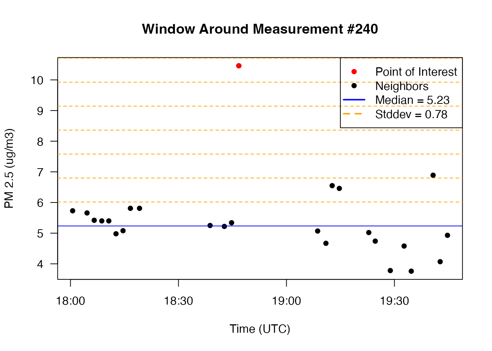
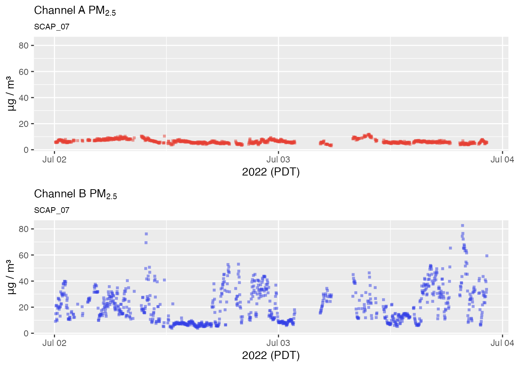
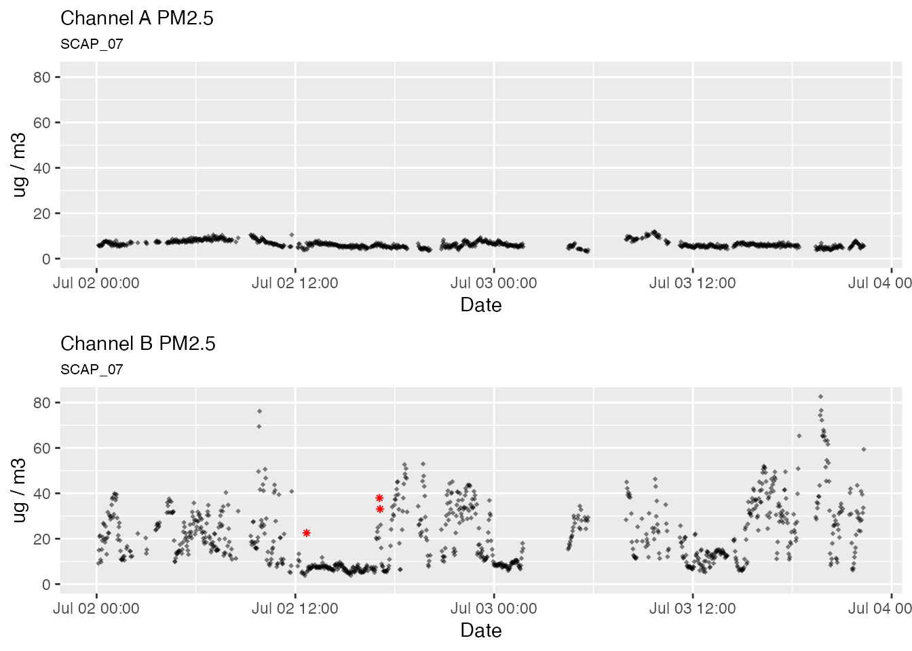

Outlier Detection with the Hampel Filter
Mazama Science
2019-04-19
Source:vignettes/articles/outlier_detection.Rmd
outlier_detection.RmdThis vignette explores the use of the pat_outliers()
function to identify and potentially replace timeseries outliers in the
data and the underlying algorithm used that makes this possible.
A quick example
Raw PurpleAir PM 2.5 time series data will occasionally contain visible outliers – measurements which are not plausibly explained by atmospheric processes and thus likely due to sensor error. Some monitors are noisier than others, but a week’s worth of data from any sensor will likely contain some of these electrical glitches.
Using example data released with the package, let’s have a look at
the raw PM2.5 measurements for a Seattle based sensor during the first
week of August, 2018. We will use the sampleSize = 1e6
argument to prevent sub sampling of the data that might leave out some
outliers. (We’re willing to wait for the plot so we can see
everything!)
pat <- AirSensor::example_pat
pat_multiPlot(pat, plottype = "pm25", sampleSize = 1e6)
We definitely see a few individual data points that look like outliers while other momentarily elevated levels consist of multiple measurements and are more likely to represent valid measurements.
Let’s see if our outlier detector can correctly identify outliers without flagging the more believable measurements:
pat_outliers(pat, showPlot = TRUE)
The Hampel Filter
The seismicRoll R package was developed for use with high resolution seismology waveforms. It provides high performance functions for a variety of signal processing algorithms including the Hampel Filter.
The pat_outlier() function uses the Hampel filter to
identify outliers. The Hampel filter is a robust outlier detector that
uses Median
Absolute Deviation. For each point, a median and standard deviation
are calculated using all neighboring values within a window of size
windowSize. If the point of interest lies multiple standard
deviations from the median it is flagged as an outlier. As the Hampel
value increases, the more likely it is that the value is an outlier.
However, there is no universally appropriate window size or threshold to
use. It’s up to us to come up with our own window size and threshold
based on the characteristics of our time series.
Detailed discussion of the algorithm is available at:
- Hampel Filter – Matlab function documentation
- Generalized Hampel Filter – Journal on Advances in Signal Processing
Window width and detection threshold
The pat_outliers() function provides two parameters to
control outlier detection:
-
windowSize– number of measurements to include in a window -
thresholdMin– number of std. dev. units above which a measurement is considered an outlier
The default setting of windowSize = 23 means that 23
samples from a single channel become the population from which the
median and standard deviation are calculated. Each Purple Air channel
makes a measurement approximately every 80 seconds so the temporal
window is 23 * 80 sec or approximately 30 minutes. This seems like a
reasonable period of time over which to evaluate PM2.5 measurements. It
is long enough to capture significant change making it more likely we
will only identify true outliers.
The default setting for the detection threshold
thresholdMin = 8 means that the sample at the center of the
rolling window must have a value at least 8 standard deviation units
away from the window median to be flagged as an outlier.
To explain how this works, we will focus on a single day’s worth of data and use base R functionality to zoom in and visually explore the algorithm. We start with a visual inspection of the data:
oneDayData <-
pat %>%
pat_filterDate("2022-07-02", days = 1) %>%
pat_extractData()
# Visually inspect for outliers
plot(oneDayData$datetime, oneDayData$pm25_A,
xlab = "Jul 02, 2022", ylab = "ug/m3", las = 1)
title("A channel PM2.5")We definitely have what looks to the eye like outliers so let’s use
the seismicRoll::findOutliers() function to figure out
exactly where they are:
# Find the outliers
seismicRoll::findOutliers(oneDayData$pm25_A)## integer(0)The following example explains the outlier detection process with a
single window centered on the outlier at index 872:
# Set example point, neighbors, median, and window
windowWidth <- 23
halfWidth <- round(23/2)
exampleIndex <- 240
windowStart <- as.integer(exampleIndex - halfWidth)
windowEnd <- as.integer(exampleIndex + halfWidth)
exampleNeighbors <- c(windowStart:(exampleIndex - 1), (exampleIndex + 1):windowEnd)
windowMedian <- median(oneDayData$pm25_A[exampleNeighbors], na.rm = TRUE)
windowSd <- sd(oneDayData$pm25_A[exampleNeighbors], na.rm = TRUE)
# Plot the window around the example point along with the window median
plot(oneDayData$datetime_A[windowStart:windowEnd],
oneDayData$pm25_A[windowStart:windowEnd],
col = "black", pch = 16, cex = 1,
main = paste0("Window Around Measurement #", exampleIndex),
las = 1, xlab = "Time (UTC)", ylab = "PM 2.5 (ug/m3)")
points(oneDayData$datetime_A[exampleIndex],
oneDayData$pm25_A[exampleIndex],
col = "red", pch = 16, cex = 1)
# Add lines for the median and several standard deviations beyond
abline(h = windowMedian, col = "blue")
abline(h = windowMedian + 1:8 * windowSd,
lty = "dashed", col = "orange")
# Add a legend
legend(x = "topright",
legend = c("Point of Interest",
"Neighbors",
paste0("Median = ", round(windowMedian,2)),
paste0("Stddev = ", round(windowSd,2))),
col = c("red", "black", "blue", "orange"),
lwd = c(1,1,2,2),
lty = c(NA, NA, "solid", "dashed"),
pch = c(16, 16, NA, NA))
The example code above can be applied to any outliers identified with
seismicRoll::findOutliers() to gain a better understanding
of why each point is flagged as an outlier. Remember that this is a
“rolling” algorithm and that the windowMedian and
windowSd are recalculated for every single point in the
timeseries.
If an outlier is detected even when it visually appears to lie on top of other data points it just means that the window-local median and standard deviation are very small, thus requiring much smaller deviations from the median to be flagged as an outlier.
Replacing values
The pat_outlier() function allows you to replace
detected outliers with the windowMedian, resulting in a
cleaner timeseries with likely electrical glitches removed. The
following plots demonstrate replacement of outliers.
No outlier replacement
pat2Day <-
pat_filterDate(pat, "2022-07-02", days = 2)
# No outlier replacement
pat2Day %>% pat_multiPlot("pm25", sampleSize = 1e6)
Default outlier replacement
# Default outlier replacement
pat2Day %>%
pat_outliers(windowSize = 23, thresholdMin = 8, replace = TRUE) %>%
pat_multiPlot("pm25", sampleSize = 1e6)
Aggressive outlier replacement
# Aggressive outlier replacement
pat2Day %>%
pat_outliers(windowSize = 23, thresholdMin = 4, replace = TRUE) %>%
pat_multiPlot("pm25", sampleSize = 1e6)